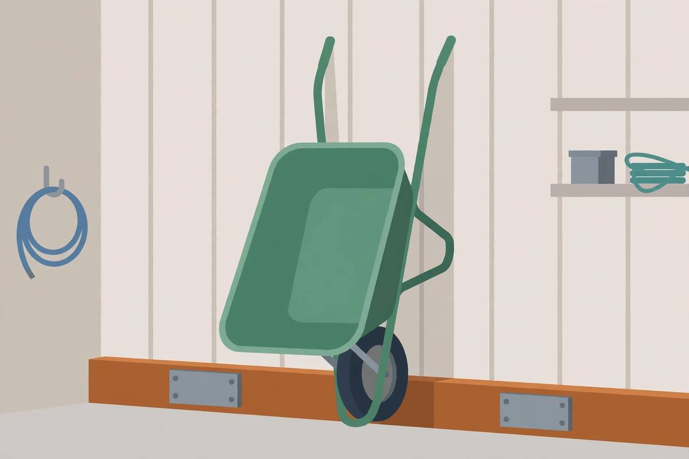

Storing a wheelbarrow in the garage: weigh it first, then hang, lean, or park it

How much does your wheelbarrow weigh? Not the load it can carry. The barrow itself, empty, the thing the hook or rack has to hold all winter. Most wheelbarrow storage advice skips that question and jumps straight to hanging, which is how a barrow ends up on a hook rated for half its weight. The honest sequence is shorter than the fix for a barrow on the floor: weigh the barrow, read the hardware rating twice, because the two numbers printed for the same hook may not agree, and then choose between hanging, leaning, and parking on the floor.
The three ways this goes wrong
The rating was a guess. A hook gets bought because it looks heavy duty, and the first anyone learns its real capacity is when the barrow is already on it. The mount was the weak point. A hanger screwed into drywall alone carries a fraction of what the same hanger carries into a stud, and listings say so, in the small print. The barrow was hung where it does not fit. A hung barrow still occupies wall depth, and a spot chosen without checking the car door swing and the mirror path turns storage into a daily obstacle. Each mistake has the same root: the decision was made before the measurements.
Weigh the barrow, then read the rating twice
Start with a real barrow. The Ames True Temper C6 is a common 6 cubic foot steel tray contractor wheelbarrow, and its Amazon.ca listing gives its weight twice, inconsistently: the product description states 45.8 lb each, while the same listing’s spec table states an item weight of 16.78 kg, about 37 lb. The listing also gives the size that matters for storage, 61 by 25.5 by 28 inches, and a load capacity of 270 lb, which is the carrying figure, not the storage figure. Plan on the heavier of the two weights. A bathroom scale under the wheel, with the handles supported level, settles the question for your own barrow in a minute.
The hardware side is no cleaner. Gladiator’s own site states that its Dual Hook is suitable to hang a wheelbarrow up to 50 lb (22.7 kg), and that its hooks range from 5 lb to 50 lb of capacity depending on the model. The RONA listing for that same hook, model GAWEXXUHSH, priced at C$14.99 on November 20, 2026, prints 50LB in its format line and then states a rated weight capacity of 25 lb in its description. Same hook, two ratings, one retailer page. The hook also only works as part of Gladiator’s GearWall or GearTrack wall systems; it is not a screw to the wall product. The direct screw alternative, a Peony River wall mount hanger sold for ladders and wheelbarrows, states the mounting condition plainly: 50 lb capacity if wall stud mounted, and items over 20 lb are not recommended if drywall mounted.
The working rule from all of that: the lowest credible number wins. If the barrow is near 45 lb and one source says the hook holds 25, the hook holds 25 until the manufacturer’s figure for the exact model says otherwise, and drywall alone is out of the question at these weights.
Hang, lean, or park: the decision by weight and wall
| Your situation | Storage choice | Why it fits |
|---|---|---|
| Barrow verified under the hardware rating, stud wall or track system available, barrow used weekly in season | Hang it at working height | The floor space is recovered and the barrow comes down in one motion, which is what weekly use needs |
| Barrow at or above the hook ratings you can verify, or only drywall where it would hang | Lean it, tray against the wall, handles down | No hardware carries the load, the footprint shrinks to the tray’s depth, and there is nothing to pull out of the wall |
| Barrow used daily in season, or the garage has the floor room | Park it in a marked spot | A barrow that rolls out every morning earns its floor space; paint or tape the spot so the space is not quietly taken by other gear |
| Off season, any weight | Hang it high or lean it in deep storage | Winter is the snowblower’s season; the barrow can take the awkward spot nobody needs daily |
Build the DIY rack, step by step
The low cost hanging route is a scrap wood rack, and the procedure below follows the one Family Handyman publishes. It hangs the barrow by its rim on a ledge, with hooks as latches, and every fastener lands in a stud.
- Find two studs and mark them. The rack spans both; nothing in this build trusts drywall.
- Fit the ledge. Centre a 2 ft length of 1x4 across the two studs, 2 ft above the floor, and tack it into place.
- Add the mending plates. Drive 3 in screws through metal mending plates and the 1x4, into the studs, leaving about 3/4 in of each plate sticking above the 1x4 to catch the barrow’s rim.
- Rest the barrow on the ledge. The rim sits behind the plates. Mark the studs 1 in above the wheelbarrow bucket.
- Fit the latch hooks. Drill pilot holes on the marks and screw ceiling hooks into the studs.
- Latch and test. Twist the hooks so they catch on the wheelbarrow lip and hold it in place, then push and pull the stored barrow firmly. It should not rock, slide, or lift off the ledge.
Materials are the 1x4 offcut, two mending plates, two ceiling hooks, and the 3 in screws, plus a stud finder, a drill, and a level. Warning before the step it belongs to: this rack is sized by the procedure for a typical barrow, but your barrow’s verified weight is still the limit. A barrow well past 50 lb belongs on the floor or leaning, not on a scrap wood ledge.
Clearance checks before the car comes back in
A stored barrow is 61 inches long in the C6’s case, and hung or leaned it trades floor length for wall depth. Before the hardware is final, run three checks with the barrow in its stored position. The car door on that side opens fully without the handle or the barrow’s wheel coming close. The driver’s mirror clears the barrow on the way in and out, at the angle the car actually enters, not the angle that looks fine standing still. And the walkway to the house door stays a walkway: a hung barrow you duck around daily is a barrow that gets taken down and left on the floor.
The winter swap
The last decision is seasonal. In the growing season the barrow is prime gear and deserves the reachable spot. In winter it is dead weight in the best location in the garage, while the snowblower needs exactly that spot by the door. Swap them. The barrow goes high on its rack or leaning in the deep corner, the snowblower takes the floor spot, and the swap back happens on the first spring cleanup day. Success looks like this: the barrow comes down in spring with a sound rack, no pulled fasteners, no wall damage, and a tire that was stored off the concrete. If the rack, the rating check, and the clearance checks all held, the system is set. Weigh first, and the barrow stores itself.
, Tom Reilly, Home & DIY Writer